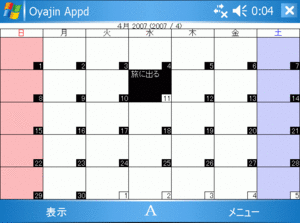

だらだらと W-ZERO3
「W-ZERO3」は2005年12月14日に発売された、WILLCOM&SHARP&MicrosoftコラボレーションのWindows Mobileスマートフォンです。特にまとめられそうな点だけを抽出してやっていきたいと思います。
フリーのスケジューラとして、未だに活用しているOyajinAppointment++（仕事人さん作）ですが、VGA化されていないという点で若干淋しくなってきました。OyajinAppointment++はResource Hackerで強制的にVGA化しても表示がはみ出てしまうのが残念でした。海人さんのOyajin Appointment日本語版？のソースを参考にさせていただいて、VGAできないか試しています。
Oyajin Appdの特徴として、
|
 |
|
CAB版(インストーラ形式) Oyajin Appd v0.43 2008/08/19 |
ZIP版 Oyajin Appd v0.43 2008/08/19 |
| 特集系 |
|---|
|
- MortScriptの自作スクリプトの投稿ができます。いわだら作のスクリプトも置いています。 |
|
- W-ZERO3 で FON 一発設定 (2007/2/4) W-ZERO3でFONルータ「La Fonera」用の初期設定を行います。 |
|
- GogleVideo to W-ZERO3 (2006/1/1) GoogleVideoをW-ZERO3で見るようにする手順です。 |
| 小ネタ系 |
|
- 導入しているソフト (2007/3/20) new!! いわだらがW-ZERO3にインストールしているソフトを紹介します。 |
|
- W-ZERO3 ワンポイント コネタ (2006/1/10) W-ZERO3を使用していく上でつまずきやすいポイントとか、 覚えておくと何かと便利に使えるかもしれない情報。コンゴトモヨロシク。 |
|
- W-ZERO3のショートカット一覧 (2006/1/8) W-ZERO3で便利に使えそうなショートカットです。 |
| レポ系 |
|
- WPC EXPO2005 だらっとフォト (2005/10/29) WILLCOMブースを見てきました。W-ZERO3、洋ぽん、京ぽん2、TTなど。 |
| → メイン掲示板 |
| → だらだらぶろｇ DaDaDa！へ |
管理人：いわだら [ date18@gmail.com ]